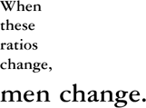

This volume in the Blackwell Companion series convenes scholars, theorists, and practitioners of humanities computing to report on contemporary "digital literary studies." Perhaps the best way to characterize their collective account is to say that it depicts a scene of encounter. A Companion to Digital Literary Studies is fundamentally a narrative of what may be called the scene of "new media encounter" — in this case, between the literary and the digital. The premise is that the boundary between codex-based literature and digital information has now been so breached by shared technological, communicational, and computational protocols that we might best think in terms of an encounter rather than a border. And "new media" is the concept that helps organize our understanding of how to negotiate — which is to say, mediate — the mixed protocols in the encounter zone.1
But if the Companion is an account of new media encounter, then it also belongs to a long lineage of such "first contact" narratives in media history. New media, it turns out, is a very old tale.
To help define the goals of this volume, it will be useful to start by reviewing the generic features of this tale. There are more and less capable imaginations of the new media encounter moment, and it is important to be able to tell the difference before we turn specifically to the digital literary studies scene.
Leonard Doob, in his report Communication in Africa, tells of one African who took great pains to listen each evening to the BBC news, even though he could understand nothing of it. Just to be in the presence of those sounds at 7 P.M. each day was important for him. His attitude to speech was like ours to melody — the resonant intonation was meaning enough. In the seventeenth century our ancestors still shared this native's attitude to the forms of media (Marshall McLuhan, "The Medium is the Message" [1994: 20])
No new media experience is fully imaginable, it appears, without the help of what may loosely be called narratives of new media encounter such as this Caliban moment of media enchantment/media colonization in McLuhan's essay.2 Whether told from the perspective of the native of old media or the ambassador of new media, such tales are a staple of epochs undergoing media change. Two other paradigmatic examples are Plato's myth in the Phaedrus of the inventor of writing giving his demo and Claude Lévi-Strauss's account in Tristes Tropiques of the tribal chief who imitated the anthropologist's writing:
But when they came to letters, This, said Theuth, will make the Egyptians wiser and give them better memories; it is a specific both for the memory and for the wit. Thamus replied: O most ingenious Theuth, the parent or inventor of an art is not always the best judge of the utility or inutility of his own inventions to the users of them. And in this instance, you who are the father of letters, from a paternal love of your own children have been led to attribute to them a quality which they cannot have; for this discovery of yours will create forgetfulness in the learners' souls, because they will not use their memories; they will trust to the external written characters and not remember of themselves. The specific which you have discovered is an aid not to memory, but to reminiscence, and you give your disciples not truth, but only the semblance of truth; they will be hearers of many things and will have learned nothing; they will appear to be omniscient and will generally know nothing; they will be tiresome company, having the show of wisdom without the reality.
(Plato 2005)
I handed out sheets of paper and pencils. At first they did nothing with them, then one day I saw that they were all busy drawing wavy, horizontal lines. I wondered what they were trying to do, then it was suddenly borne upon me that they were writing or, to be more accurate, were trying to use their pencils in the same way as I did mine The majority did this and no more, but the chief had further ambitions. No doubt he was the only one who had grasped the purpose of writing. So he asked me for a writing-pad, and when we both had one, and were working together, if I asked for information on a given point, he did not supply it verbally but drew wavy lines on his paper and presented them to me, as if I could read his reply.
(Lévi-Strauss 1973: 333–4)
One might also think of such similar cross-historical pairings as Augustine's account of coming upon Ambrose engaged in the new practice of silent reading ("when we came to see him, we found him reading like this in silence, for he never read aloud" [VI.3]) and W. J. T. Mitchell's pedagogical exemplum of "showing seeing" (a simulation of new media contact in which "I ask the students to frame their presentations by assuming that they are ethnographers who come from, and are reporting back to, a society that has no concept of visual culture Visual culture is thus made to seem strange, exotic, and in need of explanation" [Mitchell 2002: 97]).
Many more instances could be cited; and, indeed, narratives of new media encounter in the form of first contact with the Word, Book, Law, Image, Music, and (more recently) Code are deeply embedded in the entire historiography of Early Modern religious or imperial conquest, Enlightenment and industrial "modernization," twentieth-century "control through communication" (coupled with "mass entertainment"), and postindustrial "informating" or "knowledge work."3 It might be hypothesized that all major changes in the socio-cultural order are channeled symbolically and/or instrumentally through narratives of media change — to the point, indeed, that such narratives often take on the significance of conversion experiences. New media encounters are a proxy wrestle for the soul of the person and the civilization. Augustine's conversion ("take it and read," the child sings nearby in one of history's most potent stagings of random-access reading [VIII.12] is not unique). Dramatizations of the instant when individuals, villages, or nations first wrap their minds around a manuscript, book, telephone, radio, TV, computer, cell phone, iPod, etc., are overdetermined. McLuhan spoke of "electric" media as if it were the incandescent star of a new nativity. And adepts of digital media today reverence the "born digital" with something of the conviction of the "born again."
Or, more accurately, "conversion" connotes too right-angled a change. The better term is indeed "encounter," indicating a thick, unpredictable zone of contact — more borderland than border line — where (mis)understandings of new media are negotiated along twisting, partial, and contradictory vectors. To adapt Jean-François Lyotard's concept, we may say that media contact zones are like the pagus in classical times: the tricky frontier around a town where one deals warily with strangers because even the lowliest beggar may turn out to be a god, or vice versa.4 New media are always pagan media: strange, rough, and guileful; either messengers of the gods or spam. Narratives of new media are thus less objective accounts than speculative bargaining positions. Encountering a new medium, one says in essence: "what do I get if I deal with this as if it were really a scroll, book, TV, phone, radio, or surveillance instrument (and so on) in disguise?" In addition, since any speculation has its risk-averse side, narratives of new media encounter are also in part conservative. Like photographic vignettes in the nineteenth century, they have rounded, gradient contours that blur the raw edge of new media into the comfort zone of existing techno-social constraints, expectations, and perceptions.5
At once descriptive and interpretive, speculative and wary, proselytizing and critical, and visionary and regulatory, narratives of new media encounter are the elementary form of media theory — the place from which all meta-discourse about media starts. Or again, they are intra-discursive: part of the self-mediating discourse or feedback by which media "ecologies," as they have recently been called, adapt systemically when new forces swarm across the border.6
The above overview of how cultures tell themselves about new media would in a larger treatment invite more detailed, historically organized evidence. But on the present occasion, it is most useful to focus synoptically on the basic logic of such tellings. The following four propositions outline something like the overall narrative genome of the new media encounter, particular aspects of which may dominate or recede:
1. Narratives of new media encounter are identity tales in which media at once projects and introjects "otherness." At the end of his borrowed anecdote of the African listening to the BBC, McLuhan concludes: "In the seventeenth century our ancestors still shared this native's attitude to the forms of media." Even as he projects the otherness of new media onto the cultural other, he introjects that otherness into the cultural self. It is really the Westerner (genealogically: Renaissance man) who passes as African. A similar identity chiasmus can be detected in other rehearsals of new media encounter. Mitchell's "showing seeing," for example, requires students to imagine exotic others, but also to exoticize themselves. The general function of any narrative of new media encounter, we may say, is to depict new media as the perpetual stranger or (pace Lyotard) pagan in our own midst. Such a mirror moment participates in the broader logic of cultural and interpersonal encounters, which are meaningful only to the extent that the self, at least for a piercing moment, becomes other to itself.
2. Narratives of new media encounter emplot their identity tale as a life cycle of media change. The three primary moments in this life cycle — the building blocks of the new media narrative — are the following:
Media enchantment/colonization. Again, what I called McLuhan's "Caliban" moment is instructive. In the media studies field, the mysterious process of enchantment/ colonization that brings the African under the spell of the Prospero BBC goes by the name of "media determinism." For better or worse, media changes us. We are changelings of media.
Media disenchantment. This is the moment of critique/resistance. One thinks, for example, of the sly way in which the tribal chief in Lévi-Strauss's anecdote beards the anthropologist while pretending to be able to write:
This farce went on for two hours. Was he perhaps hoping to delude himself? More probably he wanted to astonish his companions, to convince them that he was acting as an intermediary agent for the exchange of goods, that he was in alliance with the white man and shared his secrets. We were eager to be off So I did not try to explore the matter further.
(Lévi-Strauss 1973: 334)
Here, the anthropologist's question, "Was he perhaps hoping to delude himself?" has a curious, self-canceling logic, since it is hard to conceive of intentional self-delusion without undermining the meaning of intent and veering from ethnography into psychoanalysis. This strange question is an indicator that something odd is happening in the experience of media during the contact moment: the "native" is not just enchanted with new media ("deluded" by its magical illusion) but able to see through the magic to its reality, which turns out to be the same-old-same-old of social power ("More probably he wanted to astonish his companions … "). The Caliban moment collapses into the Machiavellian moment. Media enchantment entails disenchantment and, ultimately, resistance. The Frankfurt School critique of the media "culture industry" is paradigmatic, as is more recent critique of the same industry by the conservative right. In the case of Lévi-Strauss's anecdote, the now canonical rebuttal from a disenchanted viewpoint is Jacques Derrida's discussion of Tristes Tropiques (tinged, one might think, by Derrida's own neo-Caliban childhood as an Algerian Jew during the run-up to World War II) (Derrida 1976: 107–40).
Media surmise. I take the word "surmise" from the last line of Keats's "On First Looking into Chapman's Homer": Cortez "star'd at the Pacific" while "all his men / Look'd at each other with a wild surmise." But my thought is borrowed from such recent media theorists as Matthew Fuller, who sees in such media as pirate radio "ways in which 'hidden' dimensions of invention and combination are embedded and implicit in particular dynamics and affordances of media systems and their parts" (2005: 8); and Ronald J. Deibert, whose analysis of media "ecology" supposes the opposite of media determinism ("once introduced a technology becomes part of the material landscape in which human agents and social groups interact, having many unforeseen effects" [1997: 29]).7 The basic idea is that media — as befits a creature of the pagus — is/are wily. Indeed, the very uncertainty of singular versus plural (medium/media) is to the point.8 Media is/are not a monolithic, one-way determinism but a buzzing, unpredictable "ecology." There are niches for both the established media aggregators (church, state, broadcast or cable TV, Microsoft, Google, iTunes, YouTube, etc.) and newer species, or start-ups, that launch in local niches with underestimated general potential. In the eighteenth century, for example, the novel was a start-up.
3. The life story of the new media encounter plays out in the key registers of human significance: Historical. The very phrase "new media," of course, stages an exaggerated encounter between old and new. No media change, it seems, is imaginable without staging such a temporal encounter, where the bias usually inclines toward ála mode. This means that narratives of new media are ipso facto narratives of modernization, whether configured as progress ("Enlightenment"), differentiation (the specialization of once unified cultural sensibilities and institutions into bureaucratically insulated modern functions), disruption (as in Joseph Schumpeter's economic model of "creative destruction"), or globalization (the most recent variation on all the above).
Socio-political. Since new media encounter narratives are modernization narratives, they are also big with the agendas of social identity that have attended the Western understanding of modernization from the Enlightenment through at least the apparent convergence of neo-liberalism and -conservatism that Francis Fukuyama, in the year of the fall of the Berlin Wall, famously called the "end of history." We need not review the extensive literature on the modernizing social effects of print, for example, to identify the Westernizing, post-Enlightenment program behind such recent new media claims as: information wants to be free, the internet is decentralized, or (most recently) Web 2.0 = collective intelligence.9 Socio-political claims about new media inherit a longstanding assumption that media reconfigures one-to-many and many-to-many relations through what McLuhan described as "the new scale that is introduced into our affairs by each extension of ourselves, or by any new technology" (1994: 7). Racial, gender, class, age, and other social relations also figure in representations of new media encounter, including — as the work of such critics as Wendy Chun, Jennifer González, and Lisa Nakamura argues — those specifically focused on encountering the cultural other in the digital new world.
Subjective (cognitive, psychological, psychosomatic, phenomenological, "personal"). Here it is useful to recall the full context of the McLuhan dictum about the "new scale" and "extension of ourselves." The canonical passage from the opening of "The Medium is the Message" is as follows:
In a culture like ours, long accustomed to splitting and dividing all things as a means of control, it is sometimes a bit of a shock to be reminded that, in operational and practical fact, the medium is the message. This is merely to say that the personal and social consequences of any medium — that is, of any extension of ourselves — result from the new scale that is introduced into our affairs by each extension of ourselves, or by any new technology.
(1994: 7, italics added)
"The personal and social" is a typical McLuhan doublet for the impact of new media. New media may be a collective social-cultural experience, but it is also psychologically, corporeally, phenomenologically, and subjectively personal. As McLuhan put it in sound-bite form in his collaboration with graphic designer Quentin Fiore, The Medium is the Massage:
electric circuitry,
an extension of
the
central
nervous
system
And on the facing, recto page,
Media, by altering the environment, evoke in us
unique ratios of sense perceptions. The extension
of any one sense alters the way we think and act —
the way we perceive the world.
10
We see similar telescopings between collective and personal ratios in accounts of new media as old as Plato's Phaedrus, where the Egyptian king foresees the total effect of writing on his people in internalizing, psychological terms ("they will not use their memories; they will trust to the external written characters and not remember of themselves"). Similarly, accounts of so-called "Web 2.0" today turn upon paradigms such as MySpace.com: both "social networked" and intensely personal.
4. When fully realized in their historical, socio-political, and personal entanglements, the identity tales created by narratives of new media encounter are unpredictable. The real interest in narratives of new media encounter — the underlying reason I describe them in such unmoored terms as "borderlands," "otherness," and "surmise" — is that the historical, socio-political, and subjective registers of media identity described above are not just neutral substrates (like pure silicon) on which programs of determinism and resistance run. Instead, they are doped with human contingencies that switch, bend, refract, refocus, and otherwise mediate the very experience of media in ways that kink any easy plot of old to new, centralized to decentralized, or embodied to tele-virtual. While narratives of new media encounter are modernization narratives, alternative visions of modernity and its complex identities emerge.
The weaker form of this thesis may be put this way: new media encounters are messy.11 "Messy" means that right-angled historical, socio-political, or psychological distinctions between old and new media typically do not survive concrete acts of narration. Instead, binary distinctions open out into overlapping, contradictory, or otherwise thick affordances between media regimes. Raymond Williams's argument about coexisting "residual," "dominant," and "emergent" social forces is paradigmatic (1997: 121–7). Equally suggestive are many other intellectual models of messy cultural transition — ranging, for example, from Fernand Braudel's layered historiography of long, intermediate, and short durations to Fredric Jameson's forthrightly untidy definition of the transition from modernism to postmodernism as a reshuffling of emphases (1983: 123). In formal studies of media, such messiness characteristically surfaces in the recognition that media shifts have an impact only after long temporal and institutional lags full of indirection. Thus historians of writing demonstrate that multiple generations were needed to convert oral peoples into people who thought in terms of writing (e.g., who can read silently). So, too, as M. T. Clanchy shows in his From Memory to Written Record, England 1066–1307, the introduction of writing only became socially meaningful through the massive accretion of later institutions, practices, forms, and technologies that scaled up the initial invention into a cultural force (as in the case of the proliferation of documents in the years Clanchy studies).12
But there is also a strong version of this thesis that will provide an appropriately dramatic finish to this synopsis of the new media encounter: narratives of new media encounter are reversible. Indeed, reversibility is the fundamental reason why it is appropriate to call such narratives modally "narrative" even if they are generically as diverse as anecdote, memoir, autobiography, travelogue, prophecy, critical essay, and so on. After all, deep narratives — those like tragedy that we think come near to exposing the kernel of narrative experience — do only three essential things. They expose the reversibility of the underlying relations of human reality (one thinks, for example, of the antithetical claims made by collective society and personal ethics on the "great," "good" Aeneas, who — as when he leaves Dido — can be "great" or "good" but not simultaneously both). They arbitrarily break the symmetry of these relations to move the plot down an irreversible course (the classical authors called it Fate.) And they then reach closure by restoring some faux-equivalent of the original reversibility at a different level (e.g., in a marriage of opposites).
In the paradigmatic Aristotelian analysis, for instance, narrative turns upon a moment of "reversal" big with "recognition." Protagonist and antagonist (sometimes the same, as in the case of Oedipus) face off symmetrically, armed with equivalent, if incommensurable, claims and powers. Then the story breaks the symmetry to distribute the contested claims and powers along the irreversible time arrow so that, for example, he who was high is brought low. Yet at the end, tragedy leaves its audience haunted by a sense of transport back to the reversible crux where, eternally, fateful agony hangs in the balance. In the Shakespearean version, therefore, we leave the theater haunted by Lear's "no, no, no life?" because the very repetition of the question suggests that the only humanly meaningful answer to the existential binary calculation ("to be or not to be"; Richard II's "ay, no; no, ay") is not a reckoning at all but the suspension of decision in eternal, reversible abeyance.
So, too, structuralist approaches to narrative are on the same page with Aristotle. One of the key insights of Lévi-Strauss's structural anthropology, for instance, is that powerful myths express the irremediable bivalence of such great, existential structures of human identity as nature versus culture, hunting versus agriculture, and life versus death. Like all stories, however, myths break the symmetry so that life can happen. And so great warriors and brave maidens live and die. Yet, ultimately, myths mediate between the binaries in a way that — always with the ghostly touch of ancestors — reverts from fateful diachrony to reversible synchrony. Myths are not just about life and death, therefore, but also about how such tricksters as Coyote and Crow (whose animal totems split the difference between eating live and dead things) scam the normal symmetry-breaking of existence. Such trickster myths, we might say, are the ancestors of media because their constitutively human drive to mediate between polarities may well be the origin of the media drive. (Media today, after all, is where dead things live on, animals act like men, the poor and rich star as each other, and so on. Our great contemporary tricksters are all media-creatures — pop idols, stars, DJs, artists, terrorists, and politicians.)
Poststructuralism, it may be added, radicalized such mediation further, as when Derrida tells tales of Western philosophy starring such typically trickster concepts as pharmakon (poison and cure).13 Or again, we might invoke an alternate tradition of thought by going back to Freud on the uncanny or unheimlich. The Freudian "unhomely" (as in the case of the Oedipus story that Aristotle and Lévi-Strauss thought about, too) is a tricky, reversible tale that at last reveals with all the shock of Aristotelian recognition only the "homely" in the strange, and the strange in the homely.14
The key point to take away is that narratives of new media encounter, like all narratives, have no one necessary story, even if necessity is what seems to make their story go. In the narratological universe, necessity — once called Fate, now renamed media determinism — does not dictate just a single plot line. Instead, necessity is better called "arbitrariness" or its poststructuralist variant "contingency." Earlier I suggested that media stories are pagan stories. One might also, at the end of the genealogy of theoretical approaches cited above, say with Hélène Cixous that they are "women's" stories. They are a "laugh of the Medusa." I know of no better messy, reversible account of the brilliant fury of media than the following passage from Cixous's essay, where it is possible to read not just "voice" and "speech" but "body" and "flesh" as "medium":
Listen to a woman speak at a public gathering (if she hasn't painfully lost her wind). She doesn't "speak," she throws her trembling body forward; she lets go of herself, she flies; all of her passes into her voice, and it's with her body that she vitally supports the "logic" of her speech. Her flesh speaks true. She lays herself bare. In fact, she physically materializes what she's thinking; she signifies it with her body. In a certain way she inscribes what she's saying, because she doesn't deny her drives the intractable and impassioned part they have in speaking. Her speech, even when "theoretical" or political, is never simple or linear or "objectified," generalized: she draws her story into history.
(Cixous 1998: 1457–8)
This story is also the history of encounter with new media. In Cixous's account, even one of our oldest media, the voice, is ever and again new.
Revisiting the historical, socio-political, and subjective registers of new media encounter outlined earlier, we can now see that the effects of messiness and reversal —of insisting that there is always another plot fork in media history — can be quite compelling. Media identity, it turns out, is manifold and dynamic. The particular messy and contrary effects I refer to can be captioned:
New media are old; and old media new. When new media is understood to be fully embedded in history rather than (as when it is facilely said that the internet makes books obsolete) post-historical, then it appears to be trickily both before and after its time, both (to borrow from Peter Krapp's analysis) avant la lettre and déjá vu.15
The déjá vu haunting of new by old media is clear enough. The description of the World Wide Web as new media, for example, does not survive even an instant's examination before we discover revenants of past media: we "scroll" down web "pages" of "text," "photos," "videos," and so on. McLuhan — and, more recently, Jay David Bolter and Richard Grusin — get a handle on this phenomenon through the idea of "remediation." According to the remediation thesis, the "content" of any new medium is old media, as when McLuhan says that "the content of writing is speech, just as the written word is the content of print, and print is the content of the telegraph" (1994: 8). In the digital age when, as Lev Manovich says, we witness a "second stage of a media society, now concerned as much with accessing and reusing existing media objects as with creating new ones" (2001: 35–6), the remediation thesis is perhaps even more in force even if its concept needs to be updated. The container/content framework was already inadequate in McLuhan's mid-twentieth-century analog milieu, when the formalists made a Klein-bottle out of the form/content distinction. Now it is even more out of kilter in a digital environment that constructs both container and content as "objects" whose being — resident within, but not coincident with, physical being — is constructed relationally as what Matthew G. Kirschenbaum calls "formal materiality."
Just as powerful in recent media studies has been the avant la lettre or "back to the future" haunting of old media by new media perspectives. I refer to the conjunction of two of the most influential research approaches in recent media studies. One is "media archaeology" (sometimes called Schriftlichkeitsgeschichte and "materialities of communication"), as exemplified in Friedrich Kittler's and Wolf Kittler's post-McLuhan, -Shannon, -Turing, and -von Neumann meditations on early media technologies or philosophies (e.g., gramophone, typewriter); Lisa Gitelman and Geoffrey B. Pingree's collection of essays titled New Media, 1740–1915; Wendy Hui Kyong Chun and Thomas Keenan's collection of essays on New Media Old Media; William Warner's research into "Enlightenment new media" (e.g., correspondence societies in the American Revolution that bear a resemblance to the internet); Peter Krapp's research into "hypertext avant la lettre," Wolfgang Ernst's research; and many other such arche-media projects. The result of the media archaeology approach is that it is now difficult to imagine clicking a typewriter or telegraph key — all the way back, perhaps, to the silhouettes of hands on the cave walls in Chauvet, France — without envisioning a phantom relay connecting all those earlier digital manipulations with what our finger most itches to click now: a web link. Abstracting the logic of recent technology and generalizing it historically, media archaeology encourages us to see old media as beta-releases of computability, digitality, random access, Turing machines, Von Neumann architecture, databases, programming, hypertext, and so on. (Thus I Ching, the Oulipo group's writings, William Burrough's "cut-ups," Jorge Luis Borges's "Garden of the Forking Paths," Vannevar Bush's Memex, Ted Nelson's Xanadu, etc., are now stock examples of "pre-hypertext.")
The other research field I mention is "history of the book," which in the aftermath of McLuhan is definitively a branch of media studies on a par with media archaeology. Leading scholars in the field, for example, include Elizabeth L. Eisenstein (whose The Printing Revolution in Early Modern Europe explicitly acknowledged the influence of McLuhan), Roger Chartier (who in recent years has increasingly juxtaposed the history of the book to digital developments), and Adrian Johns (whose interest in print "piracy" recently sent him off to Asia to study digital piracy operations).16 The history of the book field, of course, is about the specificity of the codex. But it is also about the codex as what Walter Ong called the "technologizing" of the word. The book is an early, and now highly advanced, media instrument.
The socio-politics of new media cut both ways. This fact becomes clear when we realize that there is not a single modernization narrative about new media that cannot with equal conviction and evidence be reversed.
In the case of digital media, for example, the early, politically progressive narrative of the BBS, personal-computer, and internet cyberlibertarians (repeated today by Web 2.0 wiki-utopians) was that centralized or hierarchical information systems would cede irresistibly to hypertextuality, interactivity, peer-to-peer, and — to cite the Web 2.0 slogans — "open source" and "collective intelligence."
But in today's time of governmental and corporate information monitoring, of course, the reverse tale is just as persuasive and equally (post)modern. In my Laws of Cool, I named this contrary narrative "distributed centralization," as witnessed in "the implantation of dynamic packet-filtering firewalls, ever more complex permission levels, increasingly rigorous (and encrypted) login processes, burgeoning access logs that track users by IP number or domain name, proliferating spyware and monitoring programs, and innumerable other presence-points of control and accountability scattered throughout the lateral network" (Liu 2004: 148). Such neo-authoritarian protocols are "lite" — as when Web 2.0 proponents speak of "lightweight programming models" such as PHP, AJAX, and other duct-tape methods that do no more than combine proprietary data systems into bricolage "mashups" making users feel they are masters of their domain. But it is like Gulliver tied down by the light, distributed threads of the Lilliputians. Leaving aside the heavies that still exist (e.g., the US National Security Agency), today's Lilliputians are the people of "standards." Open source, for example, is all about democracy, except when it is about code-correctness or design-correctness. Pity the author of an ad hoc website or blog who inserts hand-crafted source code in an open-source environment, only to run up against code puritans who say, "Thou shalt not transgress against XHTML and CSS."17 As Jaron Lanier has put it in extreme form in his critique of the total Web 2.0 mind set ("Digital Maoism: The Hazards of the New Online Collectivism"): "history has shown us again and again that a hive mind is a cruel idiot when it runs on autopilot. Nasty hive mind outbursts have been flavored Maoist, Fascist, and religious."
The subjective experience of new media is profoundly reversible. By way of shorthand (an apt metaphor), I will settle on an aspect of this issue that may be called the paradox of "notation versus presentation" — one of the deepest problems in media theory.
"Notation" denotes experiencing new media as a kind of script or programming language that needs to be mentally decoded. "Presentation" means rendering the script intuitively or immediately. Wittgenstein formulates the problem as follows (in a passage that Mitchell discusses at length in his Iconology):
At first sight a proposition — one set out on the printed page, for example — does not seem to be a picture of the reality with which it is concerned. But neither do written notes seem at first sight to be a picture of a piece of music, nor our phonetic notation (the alphabet) to be a picture of our speech. And yet these sign languages prove to be pictures, even in the ordinary sense, of what they represent.18
How is it, for example, that sight-reading changed historically from a mental-contortionist's act of translating alphabetic characters into oral performance to being the experience of the text? (As James J. O'Donnell puts it, "the manuscript was first conceived to be no more than a prompt-script for the spoken work, a place to look to find out what to say. The arrangement of words on the page, without punctuation or word division, was as user-hostile as DOS could ever hope to be, and was meant for the technician, who knew how to use it to produce the audible word" [1998: 54].) How did proficient telegraph and punch-card operators later make the transition from deciphering abstract patterns of dot-and-dash sounds or holes to directly understanding those patterns?19 And in our current milieu: how will we ever change from clumsy searching, sampling, and text- or data-mining to directly grokking the data patterns (e.g., through new interfaces or visual-verbal representations)?
There are no easy answers to such questions, only better or worse descriptions of the problem. McLuhan himself tended merely to assert that new media impinge directly on the sensorium as an "extension of man" (rather than, for example, a Nam June Paik video installation offering a decoding of TV culture). The post-McLuhan media archaeology and history of book movements I mentioned are far more historically detailed, but in the end no less descriptive. The great quest in the landmark works of Eisenstein, Chartier, Johns, and (most recently) William St. Clair, therefore, is to describe how a strange alphabetic-mechanical notation system became not just knowledge but "print culture" and print "mentality" — that is, part of core social and individual experience. Reading these works, one is struck by the mismatch between the intimate goal of the quest — no less than to get inside the head of media experience — and the remoteness of the available historical or statistical observational methods. It is like recent astronomers telling us about planets around distant stars: no one can see them, but we infer their presence through complex calculations upon intricate meshes of indirect data (representing, for example, the slight wobble of a star). Even the nuanced models and software that psycholinguists and cognitive psychologists (the astronomers of the human mind) have developed to discern which texts appear "coherent" as opposed to complexly coded are in the end primarily descriptive (as in the case of the influential Coh-Metrix project). In all these approaches, we run up against the fact that beyond a certain point humans are still black boxes.
But instead of an explanation, media studies has a counter-description or counter-narrative. Educators call this reverse tale full "literacy" and postindustrial businesses call it "knowledge work," both of which concepts require users not just to render notation into presentation but the exact reverse: to return presentation to the status of notation that can be thought about off-line, analyzed, manipulated, and otherwise actively or critically engaged. While grade-school literacy means learning to read fluently, therefore, advanced literacy means learning to read analytically by mentally annotating, or otherwise reverse-engineering, presentation. The same applies mutatis mutandis to electronic and digital media. The Institute for Multimedia Literacy at the University of Southern California, for example, takes as its mission expanding "the notion of literacy to include learning how to author and analyze visual, aural, dynamic, and interactive media."20
Of course, if the gestalt shift to presentation is a mystery, then the return to notation is too. Yet it is happening around us all the time — as when bloggers and wikiers learn not just to <em>envision</em> but <em debug</em> the code that makes the Web go.
So what is a good story about encountering new media?
While the "narrative" trope has thus far served us well, the very direction — or, rather, multiple directions — in which I have taken it mean that we may now need to expand upon the concept. I led off by suggesting that "there are more and less capable imaginations of the new media encounter moment." In the end, imagination is a more capacious term than narrative for what is involved. For, if my propositions are correct, then it follows that the best stories of new media encounter — emergent from messy, reversible entanglements with history, socio-politics, and subjectivity — do not go from beginning to end, and so are not really stories at all. To recur to the "media ecology" trope cited earlier, good narratives of new media encounter are in the end less stories than whole imaginative environments or, as I termed them, borderlands of surmise. Good accounts of new media encounter imagine affordances and configurations of potentiality. We don't want a good story of new media with a punch line giving somebody the last word. We want a good world of new media that gives everyone at least one first word (as in "folksonomical" tagging systems). We want a way of imagining our encounter with new media that surprises us out of the "us" we thought we knew.
Thus the mandate of the Blackwell Companion to Digital Literary Studies is clear. Its goal is to tell a good story of new media encounter that has the maturity of a good world of messy, reversible, and imaginative possibilities. To do so, the volume has really just one trick to play — but what a powerful Coyote or Crow trick it is. The trick is to play the "old" and "new," "codex" and "digital," and "literary" and "informational" off each other in ways that thwart any facile modernization narrative and foster surprising recognitions about the scholarly and cultural potential of new media.
The Companion therefore starts off with a section on "Traditions" before it proceeds to sections on "Textualities" and "Methodologies." This means that everything is first of all staked on staging the encounter between literary studies and computing in a tricky, shared contact zone called "tradition," which — contrary to the usual connotation of the term — is a pagus full of surprises. Literary studies and computing bump up against each other in a common genealogy of mediated experience — bookish, online, or otherwise — that shuttles uncannily between old and new. In the first section of the volume, for example, Matthew Steggle discusses not just digital scholarship in Renaissance and seventeenth-century literary studies (methods that extend the uniquely information-intensive activities of print and microfilm-based cataloguing, bibliography-making, textual scholarship, and so on that had attended this field through much of the twentieth century) but also the emergence of a new "Renaissance information" approach that sees the early modern era as itself a precursor information revolution (the time of The Renaissance Computer, as the title of one precedent-setting volume of essays he cites would have it). John Walsh similarly frames digital scholarship in the Romantic and Victorian fields within the hypothesis of a special, elective affinity between the industrial nineteenth century and postindustrial contemporaneity. Not only did both periods witness rapid social, economic, political, and cultural upheaval, but both required "ever more sophisticated and flexible technologies for representing and managing … information" to drive and witness such change. "The Child is father of the Man," Walsh says, "the nineteenth century and the industrial revolution are in large part the parents of the digital age." And to jump to Chapter 11 of the volume, Johanna Drucker's article on "The Virtual Codex from Page Space to E-Space" sends us back to the future by asserting that digital new media invite us to reconsider — and, perhaps for the first time, really understand — how the traditional print codex actually works. Far from being an inert material or formal construct that "is," the codex was always a "program" that "does" and "works"; and it is such functional dynamism that new electronic reading environments should take as their baseline for extending, augmenting, and varying the history of the book. The book is the parent of the program.
The payoff from refusing to foreclose the negotiation between the old and new is that the volume throughout provides plenty of surmise about the possibilities that emerge from the encounter zone. The essay by Gregory Crane et al. thus imagines an "ePhilology" that would reapproach classical literature through "documents that learn from each other… learn from their audiences … and adapt themselves to their users" so as to create "a dynamic space for intellectual life as different from what precedes it as oral culture differs from a world of writing" (the latter analogy, we recognize, constituting a whole narrative of new media encounter in miniature). Stephen Ramsay envisions a new mode of "algorithmic criticism" able to convene computational techniques and literary works not just to enumerate properties in a scientific way but to be a "methodological project of inventio," a way of defamiliarizing works and corpuses, unfolding new "interpretive possibilities," and furthering the "radical transformation" necessary to any truly critical reading. Keeping to the key of surmise, he concludes, "It is not that such matters as redemptive world views and Marxist readings of texts can be arrived at algorithmically, but simply that algorithmic transformation can provide the alternative visions that give rise to such readings." Similarly, Willard McCarty outlines the alternative visions that digital methods might offer the humanities through access to an exploratory research paradigm previously more at home in the natural sciences: "modeling." Computation, he argues, can create models of literary discourse that have the phenomenological status of "models of" rather than "for" — where the suspensive, open-ended syntax of "model of" (seeming almost to look out over a Keatsian sea or Wordsworthian mood of "possible sublimity") precisely captures the air of surmise.
Inspired by such surmise, many other essays in this volume offer look-over-the-hill scouting reports about specific new computational algorithms, protocols, forms, and principles. On the side closer to computation as such (algorithms, protocols), essays by Marc Bragdon et al., James Cummings, David Hoover, Ian Lancashire, Bill Winder, and Christian Wittern provide rich discussions of topics related to automated text processing, quantitative analysis, text generation, encoding, markup, and so on: in essence a handbook of some of the most essential areas of computational research in the humanities. As pertains to forms, Bertrand Gervais, Carolyn Guertin, and Dirk Van Hulle study "hypertext" as it developed from what Belinda Barnet and Darren Tofts call an "image of potentiality" surmised by the early pioneers Vannevar Bush, Douglas Engelbart, and Ted Nelson. Guertin focuses on the "postnarrative" narratives that have arisen from such hypertext and other digital forms. In the same narrative vein, Nick Montfort studies the genre of interactive fiction, and Marie-Laure Ryan scales up the concept of digital fiction to "world building." Beyond narrative, Christopher Funkhouser surveys the variety of digital poetry, while David Z. Saltz considers the new use of digital technology in performance. And then there are the new, born-digital genres: Aimée Morrison studies the blog, for example, and Andrew Mactavish considers not just digital gaming but the distinctive new imaginative genre of game "modding" or community-based game modification. Finally, no inventory of digital literary forms would be complete without mentioning the "electronic edition" and today's print/digital research "library." In the essays of Ken Price and Sayeed Choudhury/David Seaman, respectively, the edition and the library come alive as new media forms in their own right as rich with creative possibility as any of the genres listed above.
And to close on the side closer to what I above called "principles": several contributors probe the fundamental principles of digital computation as they drive the entire ferment of algorithms, protocols, and forms. John Lavagnino, for instance, discusses the complex relation between the orders of the "digital" and "analog"; while Noah Wardrip-Fruin looks closely at James Meehan's 1976 story-generation program, Tale-Spin, to theorize expansively about the "interplay" between a digital work's "surface, data, and process" that at last expresses its undergirding "logic of operations" and so its overall world view, ethos, or meaning (in this case, a world view of "planning" that exceeds the status of computational method per se). Digital literature, Wardrip-Fruin argues, is "expressive processing." Thus the surmise continues.21
What is the ultimate surmise prepared for by the Blackwell Companion to Digital Literary Studies? It is the imaginative surmise that all people today who both love literature and practice new media (or vice versa) attempt. Here we at last come to the most specific mission of this volume, which is not to explore the general encounter with digital new media but, in particular, the encounter of literary studies with digital new media. How can literature be digital? And how can the digital (the home territory, after all, of office files, databases, and spreadsheets as well as mass entertainment special effects) be literary? Does literature really have a future in a new media ecology where the fiercest, deepest, and most meaningful identity tales of our young people seem to be beholden to iPods and other I-media of music, video, chat, and blogs?
These questions also have no easy answer. I wrote a whole book recently that started out by aiming for an answer, only to be diverted into studying the proto-aesthetic of information "cool" from which, I hypothesized, any understanding of information answerable to my old love, literature, must eventually come. In lieu of an answer, let me here conclude simply by being clear about the immense stakes involved in the mission of the present volume, which, as I suggested, is not just to narrate but to prepare to imagine.
Let me tell an open-ended story. Once upon a time, "literature" in the general sense of "letters" was the darling of the great new medium of its time, writing, which — like any medium — organized and served as the interface between new technological, communicational, and computational protocols. Technologically, the protocol was the print codex and related forms (previously, the manuscript). Communicationally, it was rhetoric adapted to new graphic layouts. And computationally, it consisted of new logical processing apparatuses such as tables of contents, chapter or section titles, indexes, and so on that ramified classically mnemonic, analytical, and rhetorical routines (e.g., "my first point is … my second point is") into unsuspected new processing methods (including search, rapid random access, comparative reading of the Gospels, etc.). By the time "literature" was honed into its narrower, modern sense of aesthetic discourse, it was the operator of an advanced technological, communicational, and computational medium that was rapidly being extended via lithography, photography, and other means into a fully modern media mix.
But that fuller media sphere was also a problem for literature. In successive stages between the 1920s and 1970s, literature and literary studies — provoked in part by competition with the new audiovisual media apparatuses — assumed difficult avant-garde, formalist, structuralist, and poststructuralist avatars that at once stood off from info-media ("heresy of paraphrase," Cleanth Brooks called it) and assimilated its mind set.22 Close reading in the Joycean, New Critical, structuralist, or post-structuralist manners was thus not exactly the same as modern technology, communication, or computation, where "not exactly the same" was its pride of aesthetic difference. But it had features of all these in unsettling ways. Cutting literature off from the old, high transcendental truths (located in the divine or the romantic self), these movements sequestered literariness in a peculiarly modern, academic, or knowledge-work version of rhetoric and logic. Literature became a self-contained "form" whose internally programmed complexity had to be "closely read" with technical attention.23
Today, "digital" is the great new medium, and — as the modern to postmodern lineage outlined above anticipated — literature is certainly not its darling. The star today is "media" in a larger and more promiscuous sense that intermixes literature (when it includes it at all) with music, film, TV, animation, journalism, and so on to concoct an evolutionary stew of hot bits fighting against, and with, each other to create the new media ecology. Not coincidentally, therefore, new media studies is the title that in the academy has now won more general cultural and theoretical cachet than such narrower phrases rooted in specific disciplines as "digital humanities," "humanities computing," "electronic arts," "electronic literature," and "computer-mediated communications."24 New media is the concept under which we now organize and interface with the current configuration of technology, communication, and computation. It is shorthand, for example, for technological innovations at the hardware and software levels; new communication paradigms (as studied in the social-science field of "computer-mediated communication"); and new computation methods (including data-mining and -generation).
Yet, to keep the story open-ended, all the while the question of imagination has been left open like a vulnerable port in a firewall through which literature might still hack its way. Of course, "imagination" is a distinctively romantic phrasing. (The Aeolian harp that exercised Coleridge's and Percy Shelley's imagination, perhaps, was really a special kind of algorithmic computational instrument on a par with the Babbage machines and Jacquard looms of the time ancestral to the digital computer.) Let me generalize, therefore, by reaching all the way back to classical literary roots. Let me designate imagination poiesis, in the sense of the original concept for blended techne ¯ and aesthetic "making" (inclusive of narrative, drama, and poetry) generative of surmise. Poiesis is not the same as technology, communication, or computation. But it combines all these to imagine the identity tales — tragic, utopian, or messily mixed — that mediate "us" in relation to the others who are part of our generative kernel.25
We need today a poiesis of digital literary studies able to imagine how old and new literary media together allow us to imagine. In such a poetics, everything old and new is up for grabs again as we negotiate the contact zone between such paired terms as the following:
| Writing | Encoding |
| Reading | Browsing |
| Publishing | Transmitting |
| Preservation | Migration |
| Absorption | Immersion |
| Mimesis | Modeling |
| Imagination | Simulation |
We thought we knew what "writing" means, but now "encoding" makes us wonder (and vice versa). So, too, "reading" and "browsing" (as well as related activities like searching, data-mining, and data-visualization) destabilize each other. The same applies to all the other pairs in this list, and many others that could be added. The task of studying new media, it might be said, is to help us better to understand what it meant to write, read, and imagine in the past; while, inversely, that of studying old media is to help us appreciate what it now means to encode, browse, simulate, etc. "Digital literary studies" should make that possible.
"We" are always mediated creatures, and as such are fully alive in culture when old and new media — the ancestors and children of our self images — collaborate to allow us to encounter the imagination that we could be other.
1 Lisa Gitelman writes in the introduction to her Always Already New: Media, History, and the Data of Culture: "new media are less points of epistemic rupture than they are socially embedded sites for the ongoing negotiation of meaning as such. Comparing and contrasting new media thus stand to offer a view of negotiability in itself — a view, that is, of the contested relations of force that determine the pathways by which new media may eventually become old hat" (2006: 6).
2 "Narrative" is here an elastic term whose scope expands or narrows as discussed below.
3 The phrases "control through communication" and "informating" are JoAnne Yates's and Shoshana Zuboff's, respectively.
4 "In other words, I think that the relation between gods and humans is to be thought of in terms of boundaries. And pagus always indicates the country, the region It is the place where one compacts with something else It is a place of boundaries. Boundaries are not borders. And the relation with the gods, including the pragmatic relation of discourses, does not obey a pragmatics of border to border, between the two perfectly defined blocks or two armies, or two verbal sets, confronting each other. On the contrary, it is a place of ceaseless negotiations and ruses. Which means that there is no reference by which to judge the opponent's strength; one does not know if s/he is a god or a human. It is a beggar, but it may be a god, since the other is metamorphic, and one will have to judge therefore by opinion alone, that is, without criteria" (Lyotard and Thébaud 1985: 42–3).
5 The following from Lisa Gitelman and Geoffrey B. Pingree's introduction ("What's New About New Media") to their edited collection, New Media, 1740–1915, seems to me very wise: "we might say that new media, when they first emerge, pass through a phase of identity crisis, a crisis precipitated at least by the uncertain status of the given medium in relation to established, known media and their functions. In other words, when new media emerge in a society, their place is at first ill defined, and their ultimate meanings or functions are shaped over time by that society's existing habits of media use (which, of course, derive from experience with other, established media), by shared desires for new uses, and by the slow process of adaptation between the two. The 'crisis' of a new medium will be resolved when the perceptions of the medium, as well as its practical uses, are somehow adapted to existing categories of public understanding about what that medium does for whom and why" (xii). In general, I would be proud if my own present introduction could find a place on the still relatively short shelf of historically reflective works about the meaning of "new media" next to Gitelman and Pingree's thought-provoking introduction. (See also the introduction go Gitelman's more recent monograph, Always Already New: Media, History, and the Data of Culture.)
6 The notion of "media ecology" is now of increasingly broad provenance. I am aided in particular by Ronald J. Deibert; Matthew Fuller; and Bonnie A. Nardi and Vicki L. O'Day.
7 Also apropos is Jerome McGann's notion of "deformance," according to which technological apparatuses or Oulipo-like textual constraints can expose surprising, hidden logics in the processing of old by new media technologies (especially the chapter in Radiant Textuality on "Rethinking Textuality" as well as the chapter co-written with Lisa Samuels on "Deformance and Interpretation").
8 McLuhan fairly consistently respected the usage difference between "medium" (singular) and "media" (plural). It appears that sometime in the 1960s the singular usage of "media" gained currency. (The OED cites Kingsley Amis observing the singular usage of "media" in 1966.) It may be that the word blurred between plural and singular at roughly the time it came to designate, or discover, a general concept as opposed to discrete media forms. It is cognate, in other words, with the recognition of "media culture," "media theory," and so on. Something of a similar pattern appears to apply to the word "data," now commonly also blurred between plural and singular usages.
9 I several times in this essay invoke the concept of "Web 2.0," which came into vogue in digerati and information technology circles after 2005. Tim O' Reilly's "What is Web 2.0" (and the conferences that led up to it) was especially influential in putting the term into play.
10 McLuhan and Fiore 1967: 40–1.
11 Lisa Gitelman's characteristic word for this is "muddy" — e.g.: "media are unique and complicated historical subjects. Their histories must be social and cultural, not the stories of how one technology leads to another, or of isolated geniuses working their magic on the world. Any full accounting will require, as William Ulricchio puts it, 'an embrace of multiplicity, complexity and even contradiction if sense to be made of such' pervasive and dynamic cultural phenomena. Defining media this way admittedly keeps things muddy" (Gitelman 2006: 7).
12 In less formal studies, it may be added, the messiness of media change tends to come out more accidentally. It is very bizarre, for example, that McLuhan's "The Medium is the Message" contains a sustained sequence of strained analogies between electronic media and Shakespeare passages, including a comparison of the light that breaks through Juliet's window to television (1994: 9–10). Such symptoms are an indicator that the break between old and new media is not clean, that there is instead a linkage, but that the linkage cannot be fully rationalized. In this case, the accident that McLuhan happened to start as a scholar of English Renaissance literature stands in haphazardly for the deeper historical, social, and other continuities that link the rise of print to the rise of electronic media.
13 For a list of such Derridaean trickster phi-losophemes or "undecidables," see Derrida 1981: 43.
14 For Lévi-Strauss on Oedipus, see Lévi-Strauss 1963.
15 I borrow these terms from Krapp, but without the full complexity with which he develops them (especially déjà vu).
16 Since writing his The Nature of the Book, Adrian Johns has researched contemporary media piracy in preparation for his next project on the history of intellectual piracy from the invention of printing to the internet. Johns has just completed the manuscript for his book entitled Piracy: Creativity, Commerce, and Crime from the Invention of Print to the Internet, which includes a chapter on "Gutenberg and the Samurai" (personal communication from Johns).
17 Based on much personal experience, which will not be documented here.
18 Tractatus, 4.01; quoted in Mitchell 1986: 20. Cf., Johanna Drucker and Jerome McGann's "Images as the Text: Pictographs and Pictographic Logic": "The signs [in such invented pictographic systems as those of Joachim Becher and Bishop John Wilkins] were a code of a code, too complex for easy reading, too reductive to carry the semantic richness of ordinary language or the pictorial repleteness of visual images."
19 I borrow this observation from Kirschen-baum, MS, p. 44.
20 For a review of research literature on digital, online, and multimedia literacy, see Monica Bulger's research paper for the University of California Transliteracies Project on online reading practices (Bulger 2006).
21 I have mentioned most, but not all of the contributors to this volume in the discussion above. Omissions are purely an artifact of the need to capture a kind of "lossy," reduced-information image of the volume as a whole not redundant with the volume's table of contents. Even the shape of my image, of course, is rough; other possible thumbnail sketches of the content of this volume would emphasize a different subset of the many contributors.
22 I discuss the explicit aversion of Brooks to information and media in Liu 2005.
23 On the relation between formalist close reading and the technical, see Liu 1994: 401–2 n. 14.
24 On the emergence and fortunes of the term "new media," see Wendy Hui Kyong Chun's introduction ("Did Somebody Say New Media?") to Chun and Keenan.
25 See Liu 2003 and Liu 2006 for discussion of poiesis, techne ¯, and the humanities as a technical profession.
Aristotle (1958). The Poetics. In On Poetry and Style: Aristotle (G. M. A. Grube, Trans.). Indianapolis: Bobbs-Merrill, pp. 400–6.
Augustine (1961). Confessions. (R. S. Pine-Coffin, Trans.). Harmondsworth, Middlesex, England: Penguin.
Bolter, J. D., and R. Grusin (1999). Remediation: Understanding New Media. Cambridge, MA: MIT Press.
Braudel, F. (1980). On History (S. Matthews, Trans.). Chicago: University of Chicago Press (Original work published 1969).
Bulger, Monica (2006). "Beyond Search: A Preliminary Skill Set for Online Literacy." Septem-ber 8. Transliteracies Project, University of California. <http://transliteracies.english.ucsb.edu/post/research-project/research-clearinghouse-individual/research-papers/beyond-search-a-preliminary-skill-set-for-online-literacy>. Accessed September 9, 2006.
Chartier, R. (1993). "Libraries without Walls." Representations 42 (Spring 1993): 38–52.
Chartier, R. (1995). Forms and Meanings: Texts, Performances, and Audiences from Codex to Computer. Philadelphia: University of Pennsylvania Press.
Chun, W. (2003). "Orienting Orientalism, or How to Map Cyberspace." In R. C. Lee and S. C. Wong (Eds.). Asian America.net: Ethnicity, Nationalism, and Cyberculture. New York: Routledge, pp. 3–36.
Chun, W., and T. Keenan (Eds.) (2006). New Media Old Media: A History and Theory Reader. New York: Routledge.
Cixous, H. (1998). "The Laugh of the Medusa" (K. Cohen and P. Cohen, Trans.). In D. H. Richter (Ed.). The Critical Tradition: Classic Texts and Contemporary Trends, 2nd edn. Boston: Bedford, pp. 1454–66 (Original work published 1975).
Clanchy, M. T. (1993). From Memory to Written Record, England 1066–1307, 2nd edn. Oxford: Blackwell.
Coh-Metrix Project. Home Page. Department of Psychology, University of Memphis. <http://cohmetrix.memphis.edu/cohmetrixpr/>. Accessed September 9, 2006.
Deibert, R. J. (1997). "Medium Theory, Ecological Holism, and the Study of World Order Transformation." In R. J. Deibert, Parchment, Printing, and Hypermedia: Communication in World Order Transformation. New York: Colum-bia University Press, pp. 17–44.
Derrida, J. (1976). Of Grammatology (G. C. Spivak, Trans.). Baltimore: Johns Hopkins University Press (Original work published 1967).
Derrida, J. (1981). Positions (A. Bass, Trans.). Chicago: University of Chicago Press (Original work published 1972).
Drucker, J., and J. McGann (n.d.). "Images as the Text: Pictographs and Pictographic Logic." Institute for Advanced Technology in the Humanities, University of Virginia. <http://www.iath.virginia.edu/%7Ejjm2f/old/pictograph.html>. Accessed September 9, 2006.
Eisenstein, E. L. (1983). The Printing Revolution in Early Modern Europe. Cambridge: Cambridge University Press.
Ernst, W. (2000). M.edium F.oucault: Weimarer Vorlesungen über Archive, Archäologie, Monumente und Medien. Weimar: Verlag and Datenbank für Geisteswissenschaften.
Freud, S. (1958). "The 'Uncanny.'" In B. Nelson (Ed.). On Creativity and the Unconscious: Papers on the Psychology of Art, Literature, Love, Religion. New York: Harper and Row, pp. 122–61.
Fukuyama, F. (1989). "The End of History?" The National Interest 16 (Summer): 3–18.
Fuller, M. (2005). Media Ecologies: Materialist Energies in Art and Technoculture. Cambridge, MA: MIT Press.
Gitelman, L. (2006). Always Already New: Media, History, and the Data of Culture. Cambridge, MA: MIT Press.
Gitelman, L., and G. B. Pingree (Eds.) (2003). New Media, 1740–1915. Cambridge, MA: MIT Press.
González, J. (2000). "The Appended Subject: Race and Identity as Digital Assemblage." In B. E. Kolko, et al. (Eds.). Race in Cyberspace. New York and London: Routledge, pp. 27–50. Institute for Multimedia Literacy. "About Us." <http://iml.usc.edu/html/about_us/>. Accessed September 9, 2006.
Jameson, F. (1983). "Postmodernism and Consumer Society." In H. Foster (Ed.). The Anti-Aesthetic: Essays on Postmodern Culture. Rpt. New York: New Press, 1998, pp. 111–25.
Johns, A. (1998). The Nature of the Book: Print and Knowledge in the Making. Chicago: University of Chicago Press.
Kirschenbaum, M. G. (forthcoming). Mechanisms: New Media and Forensic Imagination. Cambridge, MA: MIT Press.
Kittler, F. A. (1990). Discourse Networks, 1800/1900 (M. Metteer with C. Cullens, Trans.). Stanford: Stanford University Press (Original work published 1985).
Kittler, F. A. (1999). Gramophone, Film, Typewriter (G. Winthrop-Young and M. Wutz, Trans.). Stanford: Stanford University Press (Original work published 1986).
Kittler, W. (1990). "Schreibmaschinen, Sprech-maschinen: Effekte technischer Medien im Werk Franz Kafkas." In W. Kittler and G. Neumann (Eds.). Franz Kafka: Schriftverkehr. Freiburg: Rombach, pp. 75–163.
Krapp, P. (2004). Déjà Vu: Aberrations of Cultural Memory. Minneapolis: University of Minnesota Press.
Krapp, P. (2006). "Hypertext avant la lettre." In W. Chun and T. Keenan (Eds.). Old Media, New Media: A History and Theory Reader. London: Routledge, pp. 357–71.
Lanier, Jaron (2006). "Digital Maoism: The Hazards of the New Online Collectivism." Edge. Edge Foundation, Inc. 30 May. <http://www.edge.org/3rd_culture/lanier06/lanier06_index.html>. Accessed September 9, 2006.
Lévi-Strauss, C. (1963). "The Structural Study of Myth." In Structural Anthropology (C. Jacobson and B. G. Schoepf, Trans.). New York: Basic Books, pp. 206–31 (Original book published 1958).
Lévi-Strauss, C. (1973). Tristes tropiques (J. Weightman and D. Weightman, Trans.). New York: Washington Square (Original work published 1955).
Liu, A. (2003). "Sidney's Technology: A Critique by Technology of Literary History." In C. Jacobs and H. Sussman (Eds.). Acts of Narrative. Stanford: Stanford University Press, pp. 174–94.
Liu, A. (2004). The Laws of Cool: Knowledge Work and the Culture of Information. Chicago: University of Chicago Press.
Liu, A. (2005). "Understanding Knowledge Work." Criticism 47: 249–60.
Liu, A. (2006). "The Humanities: A Technical Profession." In M. Hanrahan and D. L. Madsen (Eds.). Teaching, Technology, Textuality: Approaches to New Media. Houndmills, Basing-stoke, Hampshire: Palgrave Macmillan, pp. 11–26.
Lyotard, J.-F., and J.-L. Thébaud (1985). Just Gaming (W. Godzich, Trans.). Minneapolis: University of Minnesota Press (Original work published 1979).
Manovich, L. (2001). The Language of New Media. Cambridge, MA: MIT Press.
McGann, J. (2001). Radiant Textuality: Literature after the World Wide Web. New York: Palgrave.
McLuhan, M. (1994). "The Medium is the Message." In M. McLuhan, Understanding Media: The Extensions of Man. Cambridge, MA: MIT Press, pp. 7–21.
McLuhan, M., and Q. Fiore (1967). The Medium is the Massage. Rpt. New York: Touchstone, 1989.
Mitchell, W. J. T. (1986). Iconology: Image, Text, Ideology. Chicago: University of Chicago Press.
Mitchell, W. J. T. (2002). "Showing Seeing: A Critique of Visual Culture." In N. Mirzoeff (Ed.). The Visual Culture Reader, 2nd edn. London: Routle-dge, pp. 86–101.
Nakamura, L. (2002). Cybertypes: Race, Ethnicity, and Identity on the Internet. New York: Routledge.
Nardi, B. A., and V. L. O'Day (1999). Information Ecologies: Using Technology with Heart. Cam-bridge, MA: MIT Press.
O'Donnell, J. J. (1998). Avatars of the Word: From Papyrus to Cyberspace. Cambridge, MA: Harvard University Press.
Ong, W. J. (1982). Orality and Literacy: The Technologizing of the Word. London: Methuen.
O'Reilly, T. (2005). "What is Web 2.0: Design Patterns and Business Models for the Next Generation of Software." September 30, 2005. O'Reilly Media, Inc. <http://www.oreillynet.com/pub/a/oreilly/tim/news/2005/09/30/what-is-web-20.html>. Accessed September 8, 2006.
Plato (2005). Phaedrus. In The Dialogues of Plato (B. Jowett, Trans.). Oxford: Clarendon, 1892. Excerpted in H. Adams and L. Searle (Eds.). Critical Theory since Plato, 3rd edn. Belmont, CA: Thomson Wadsworth, pp. 36–8.
Schumpeter, J. A. (1942). Capitalism, Socialism and Democracy. Rpt. New York: Harper and Row, 1975.
St. Clair, William (2004). The Reading Nation in the Romantic Period. Cambridge: Cambridge University Press.
Warner, W. B. (2005). "Communicating Liberty: The Newspapers of the British Empire as a Matrix for the American Revolution." ELH72: 339–61.
Williams, R. (1977). Marxism and Literature. New York: Oxford University Press.
Yates, J. (1989). Control Through Communication: The Rise of System in American Management. Baltimore: Johns Hopkins University Press.
Zuboff, S. (1988). In the Age of the Smart Machine: The Future of Work and Power. New York: Basic Books.